Abra o Tinkercad e crie um Projeto 3D

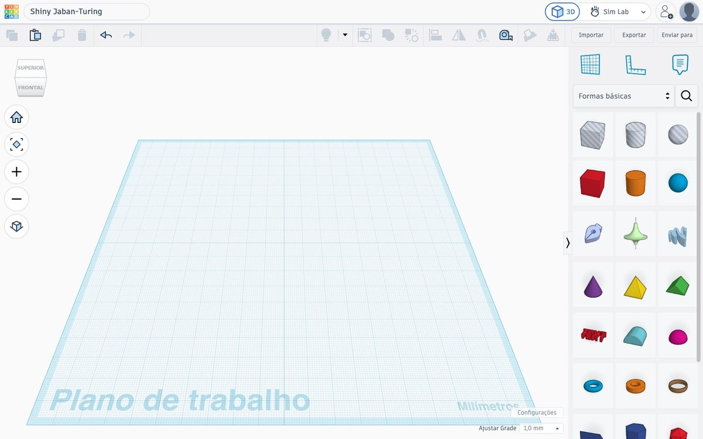
O clipe repete sozinho. Repare onde o cursor vai antes de clicar.
Foto da tela.
Entre no Tinkercad com a sua conta. No canto de cima à direita, clique em + Criar e, na primeira linha, em Projeto 3D.
Abre o editor com o plano azul quadriculado vazio e um nome sorteado — deixe assim, no último passo você troca.
- Não sei entrar
- Chame o professor. Não crie conta nova: os seus projetos estão na antiga.
- Abriu outra coisa
- Volte com a seta ⟵ do navegador e clique de novo em + Criar, escolhendo a primeira linha.
- A tela ficou branca
- O Tinkercad é pesado. Espere até meio minuto. Se continuar branca, recarregue com F5.
Arraste uma Caixa para o plano: a base
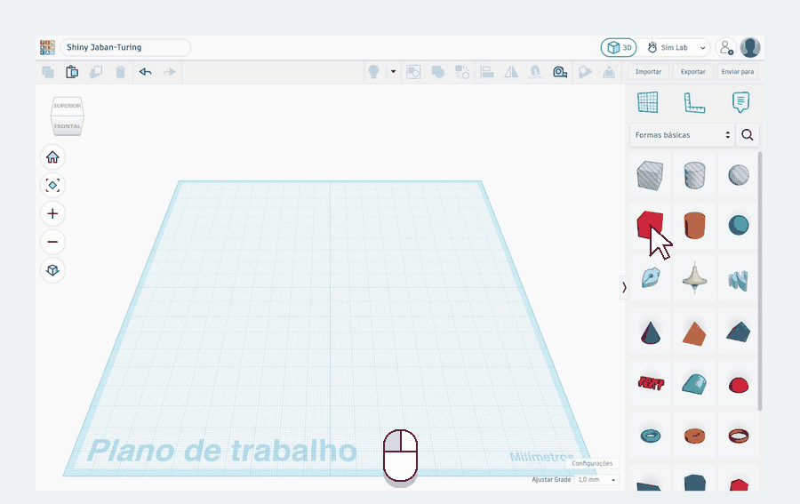
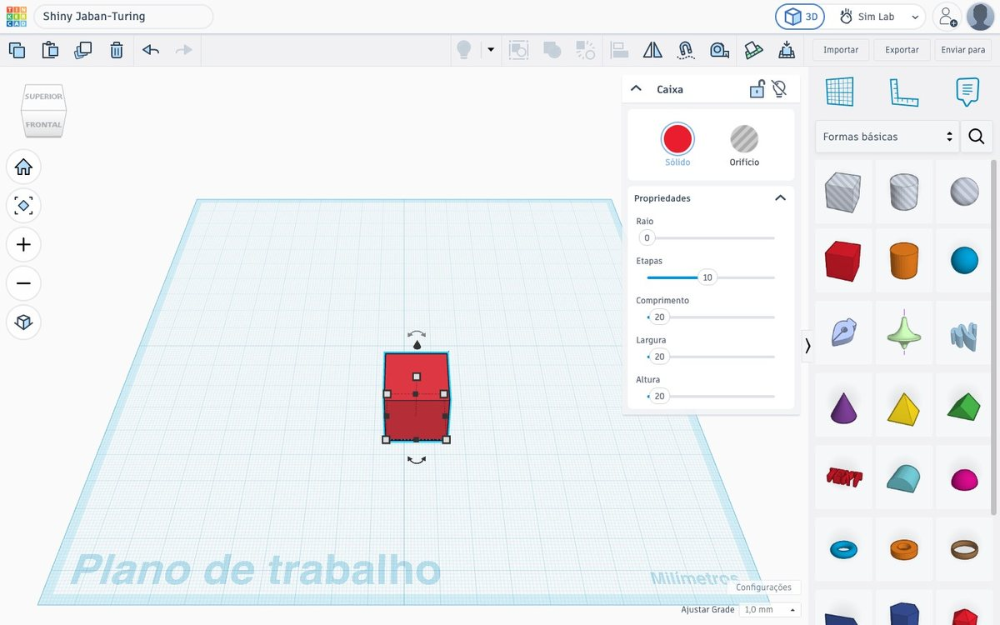
O clipe repete sozinho. Repare onde o cursor vai antes de clicar.
Foto da tela.
Na coluna da direita, a forma vermelha do meio da segunda fileira, à esquerda, é a Caixa. Segure o botão esquerdo nela, arraste até o meio do plano e solte.
- Peguei a caixa cinza listrada
- Essa é o buraco. Aperte Delete e arraste a vermelha.
Base: Comprimento 60, Largura 60, Altura 6
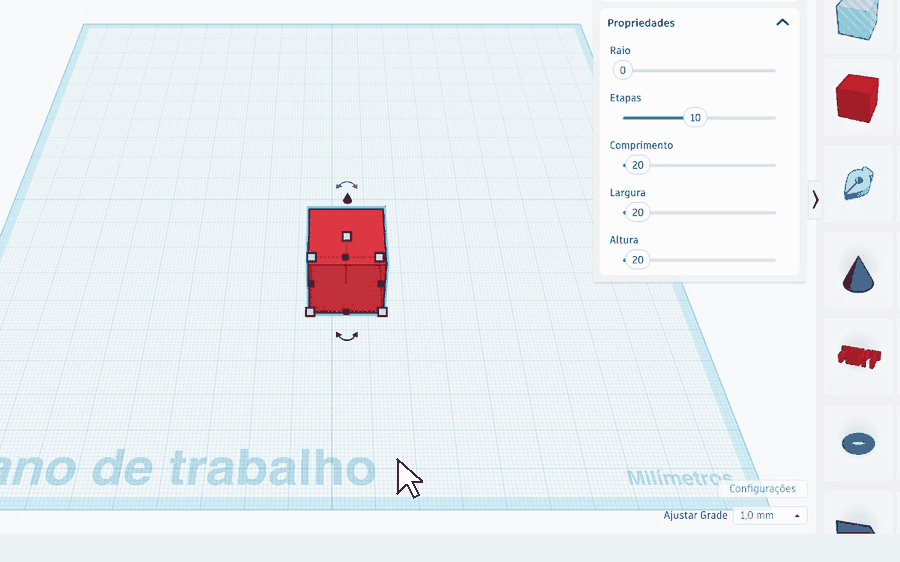
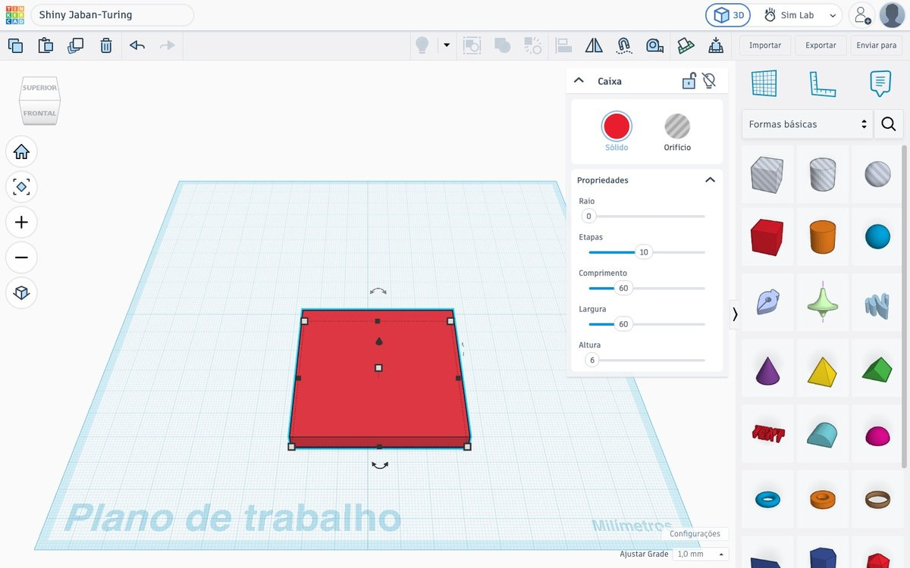
O clipe repete sozinho. Repare onde o cursor vai antes de clicar.
Foto da tela.
No painel, escreva 60 em Comprimento, 60 em Largura e 6 em Altura (Enter depois de cada).
A base é um quadrado fininho, de 6 mm de espessura.
- Digitei e nada mudou
- Falta o Enter depois de cada número.
- A base ficou alta
- O 6 foi parar em outro campo. Confira: a altura é 6.
Solte outra Caixa na base: o encosto
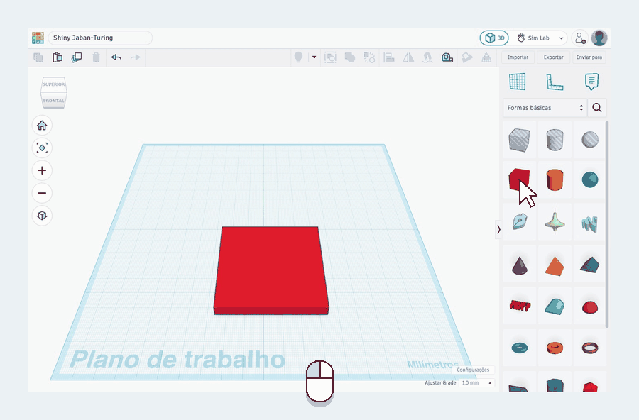
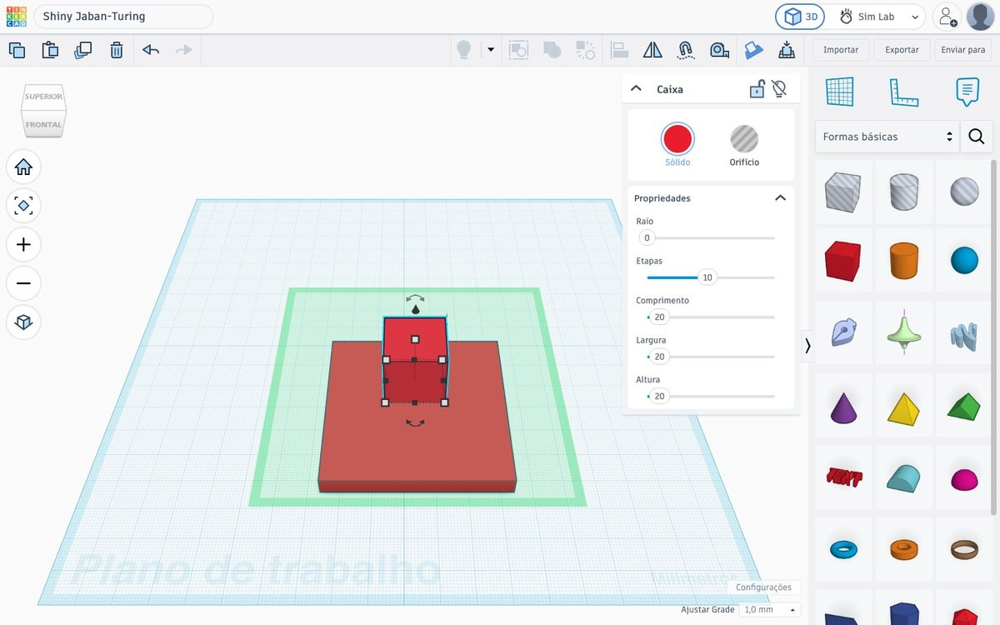
O clipe repete sozinho. Repare onde o cursor vai antes de clicar.
Foto da tela.
Clique num lugar vazio do plano. Arraste outra Caixa vermelha e solte no fundo da base, na parte de trás da tampa.
A caixa nasce em cima da base, e aparece o quadrado verde (o plano de trabalho foi para o alto da base).
- A caixa caiu no chão
- Você soltou fora da base. Arraste de novo para a tampa da base.
Encosto: Comprimento 6, Largura 60, Altura 70
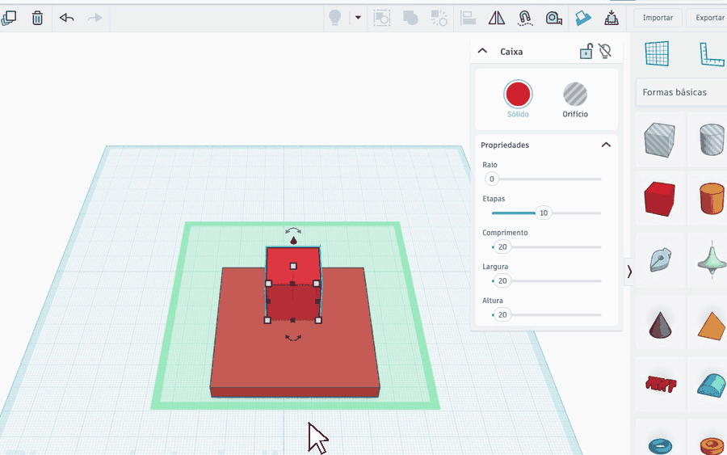
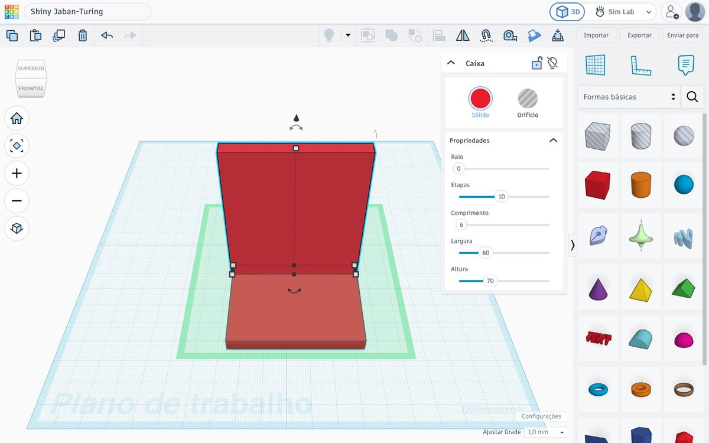
O clipe repete sozinho. Repare onde o cursor vai antes de clicar.
Foto da tela.
No painel, escreva 6 em Comprimento, 60 em Largura e 70 em Altura (Enter depois de cada).
O encosto é uma parede fina e alta, do mesmo tamanho da base de lado a lado.
- A parede ficou deitada
- Confira: altura 70, comprimento 6 (a espessura) e largura 60.
Incline o encosto para trás: a setinha do lado
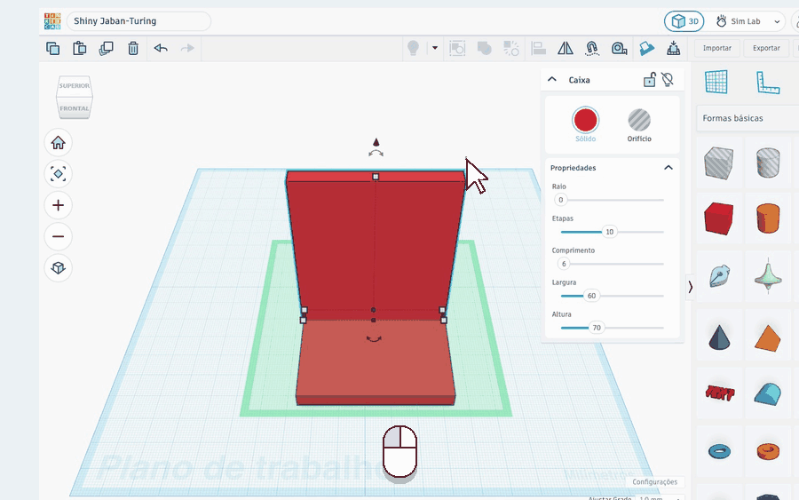
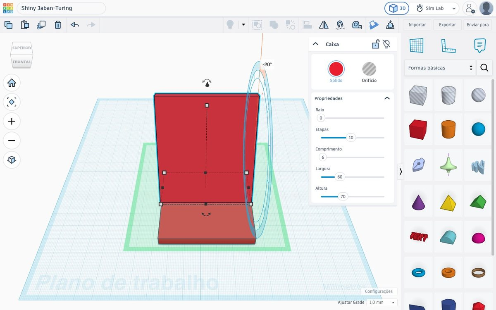
O clipe repete sozinho. Repare onde o cursor vai antes de clicar.
Foto da tela.
Com o encosto selecionado, procure a setinha curva do lado: a terceira seta curva, bem pequenininha, quase invisível, à direita e um pouco acima da quina de trás da tampa do encosto. Segure o botão esquerdo nela e arraste para cima.
Aparece um transferidor de pé, com um número. Arraste até o número mostrar −20° (ou perto: −15°, −27°) e solte. O encosto se deita para trás: o topo vai para longe de você.
- Não acho a setinha
- Ela só aparece direito quando o mouse chega perto. Aproxime a câmera com o + e passe o mouse acima e à direita da quina de trás do encosto.
- O encosto veio para a frente
- Você arrastou para baixo. Aperte Ctrl + Z e arraste para cima.
- O ângulo ficou grande demais
- Volte um pouquinho sem soltar, ou aperte Ctrl + Z e arraste de novo, mais devagar.
Selecione tudo: Ctrl + A
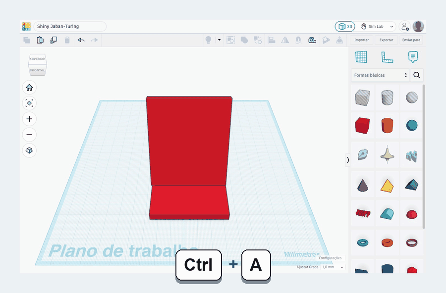
O clipe repete sozinho. Repare onde o cursor vai antes de clicar.
Foto da tela.
Clique num lugar vazio do plano e aperte Ctrl + A (Mac: Cmd + A). A base e o encosto ficam selecionados: Shapes(2).
- Selecionou só um
- Clique num lugar vazio do plano e aperte Ctrl + A de novo.
Abra o Alinhar
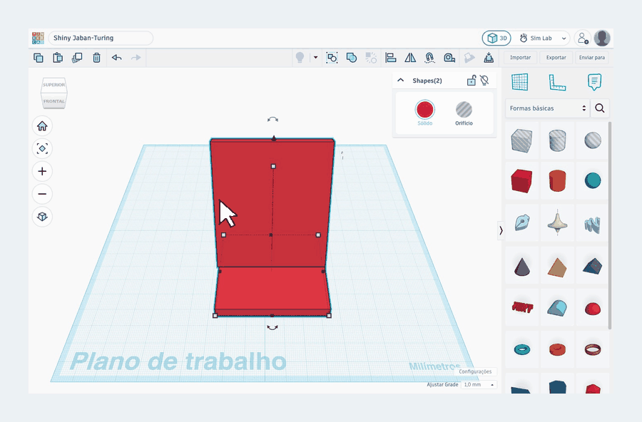
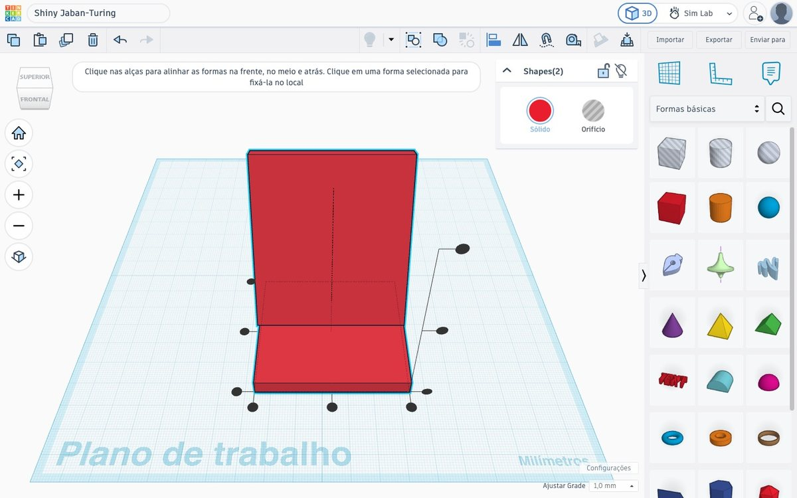
O clipe repete sozinho. Repare onde o cursor vai antes de clicar.
Foto da tela.
Na barra de cima, clique no botão Alinhar (o ícone de linhas de tamanhos diferentes, ao lado do espelho). Aparecem as bolinhas pretas.
- As bolinhas não apareceram
- O Alinhar só abre com duas ou mais peças selecionadas. Volte ao passo 7.
FIXE a base: clique nela
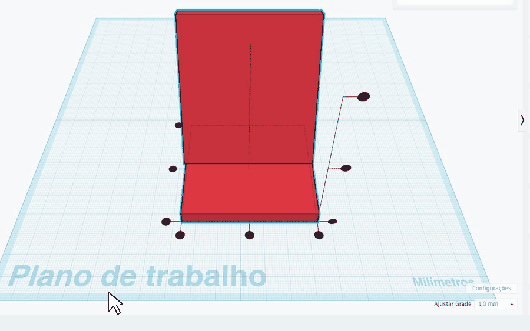
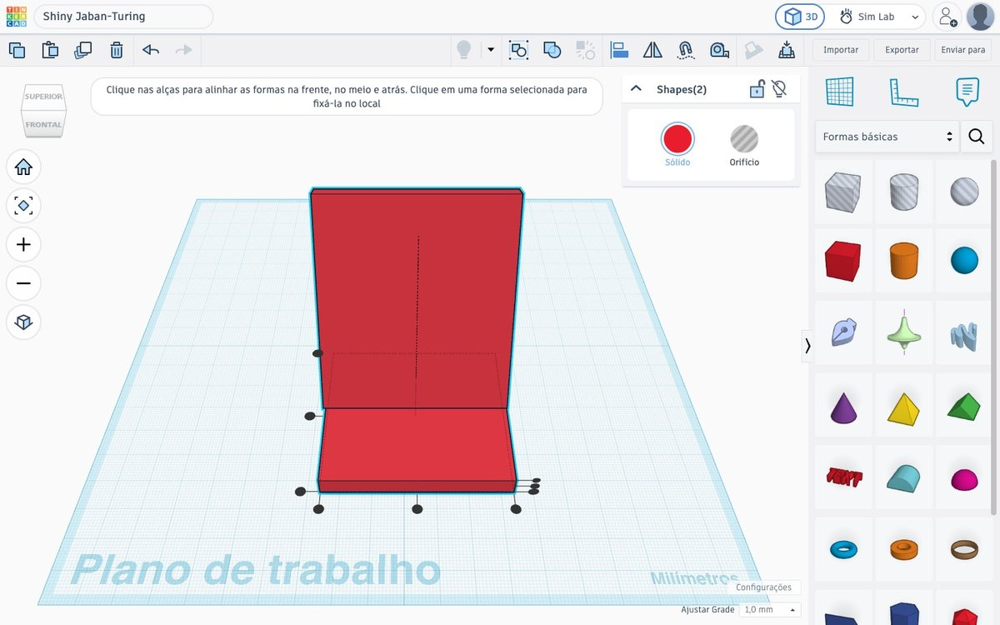
O clipe repete sozinho. Repare onde o cursor vai antes de clicar.
Foto da tela.
A base vai ser a régua: tudo se alinha por ela. Clique na base (a parte da frente, a mais baixinha): ela fica fixa e só o encosto vai andar.
- A seleção sumiu
- Você clicou fora das peças. Aperte Ctrl + Z, abra o Alinhar de novo e clique na base.
- Cliquei no encosto
- Aí é a base que vai andar. Aperte Ctrl + Z e clique na base, na parte da frente.
Encosto atrás: a bolinha de cima, à esquerda
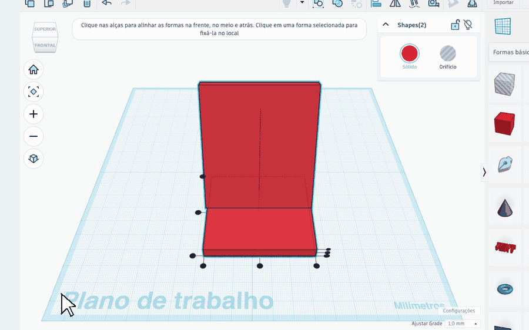
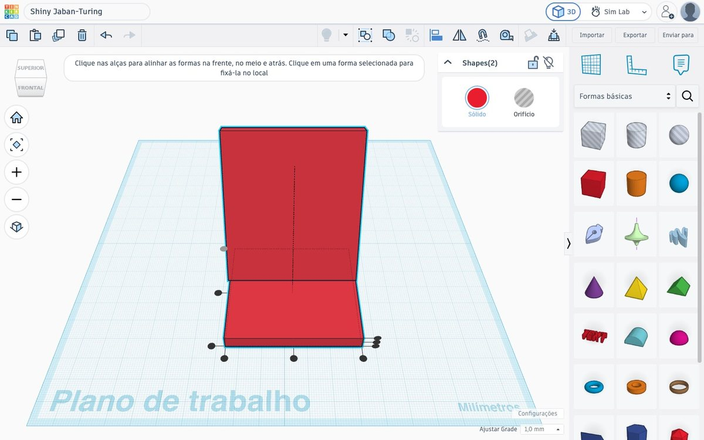
O clipe repete sozinho. Repare onde o cursor vai antes de clicar.
Foto da tela.
Na coluna da esquerda há três bolinhas: frente, meio e atrás. Clique na de cima, a que alinha atrás.
O encosto recua até o fundo da base. Aperte Esc para fechar o Alinhar.
- As bolinhas mudaram de lugar
- É normal. Procure a de cima da coluna da esquerda.
- A base é que andou
- Você não fixou a base. Aperte Ctrl + Z e volte ao passo 9.
Solte mais uma Caixa na frente da base: o batente
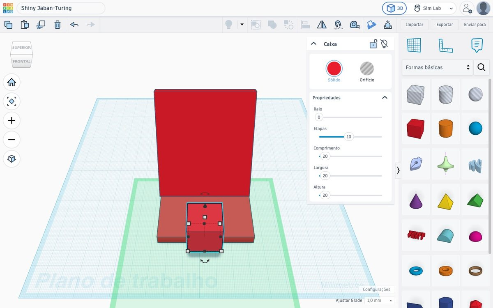
O clipe repete sozinho. Repare onde o cursor vai antes de clicar.
Foto da tela.
Clique num lugar vazio do plano. Arraste mais uma Caixa vermelha e solte na frente da base, na parte da frente da tampa.
O quadrado verde aparece de novo.
- A caixa caiu no chão
- Você soltou fora da base. Arraste de novo para a tampa.
Batente: Comprimento 6, Largura 60, Altura 14
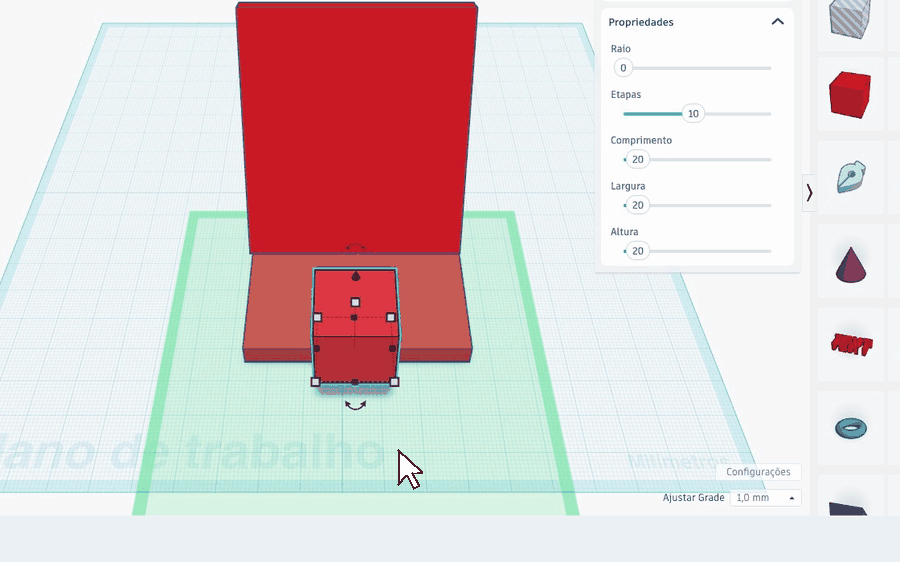
O clipe repete sozinho. Repare onde o cursor vai antes de clicar.
Foto da tela.
No painel, escreva 6 em Comprimento, 60 em Largura e 14 em Altura (Enter depois de cada).
O batente é um murinho baixo que segura o celular para ele não escorregar.
- O murinho ficou alto demais
- Confira: altura 14. Os números são 6, 60 e 14.
Escolha a base e o batente: clique e Shift + clique
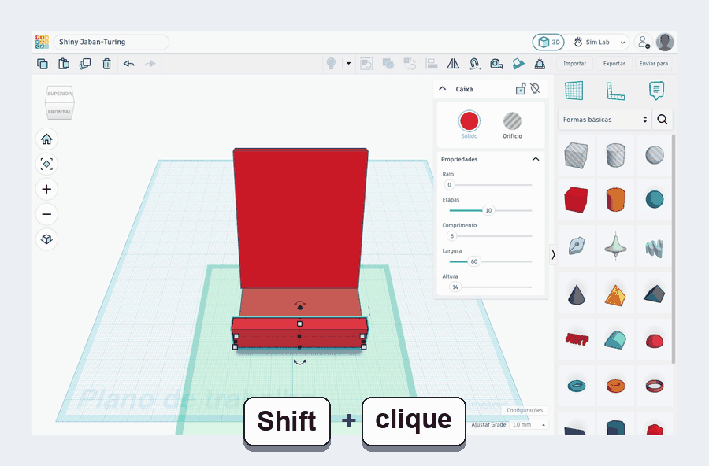
O clipe repete sozinho. Repare onde o cursor vai antes de clicar.
Foto da tela.
Clique num lugar vazio do plano. Clique na base (a faixa entre o encosto e o batente) e, segurando Shift, clique no batente.
O Shift junta a segunda peça à seleção. O encosto fica de fora: só a base e o batente.
- O painel diz Shapes(3)
- O encosto entrou. Clique num lugar vazio e refaça: primeiro a base, depois Shift + clique no batente.
- A base é difícil de clicar
- Só a faixa de tampa entre o encosto e o batente é dela. Clique bem no meio dessa faixa.
Abra o Alinhar de novo
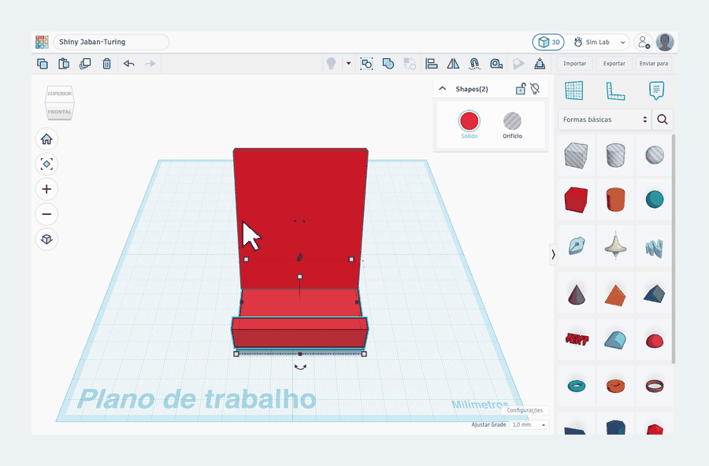
O clipe repete sozinho. Repare onde o cursor vai antes de clicar.
Foto da tela.
Na barra de cima, clique no botão Alinhar. As bolinhas pretas aparecem em volta da base e do batente.
- As bolinhas não apareceram
- Você precisa de duas peças selecionadas. Volte ao passo 13.
FIXE a base de novo
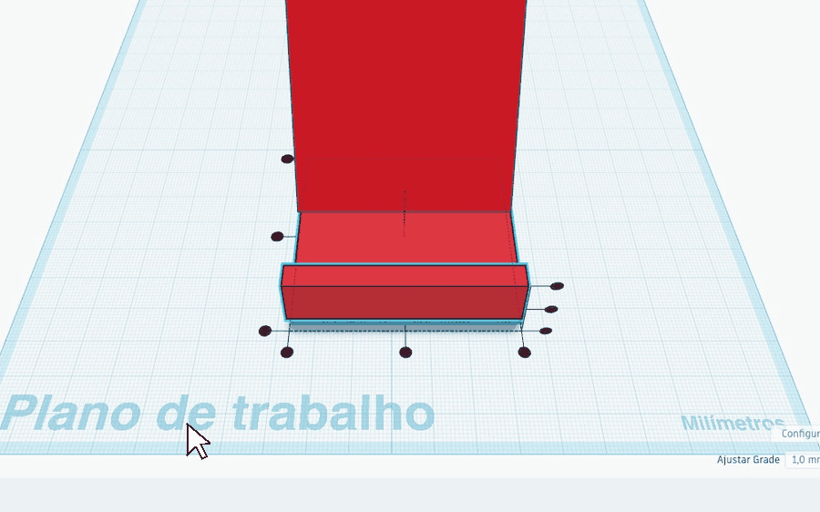
O clipe repete sozinho. Repare onde o cursor vai antes de clicar.
Foto da tela.
Clique em cima da base (a faixa da tampa entre o encosto e o batente): ela fica fixa e só o batente vai andar.
- A seleção sumiu
- Você clicou fora. Aperte Ctrl + Z e refaça os passos 13 a 15.
Batente rente à frente: a bolinha de baixo, à esquerda
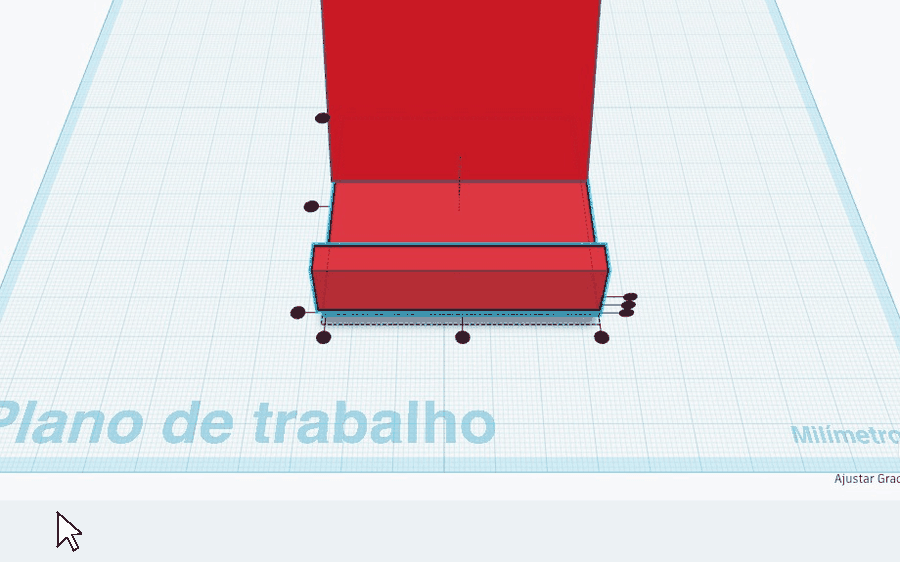
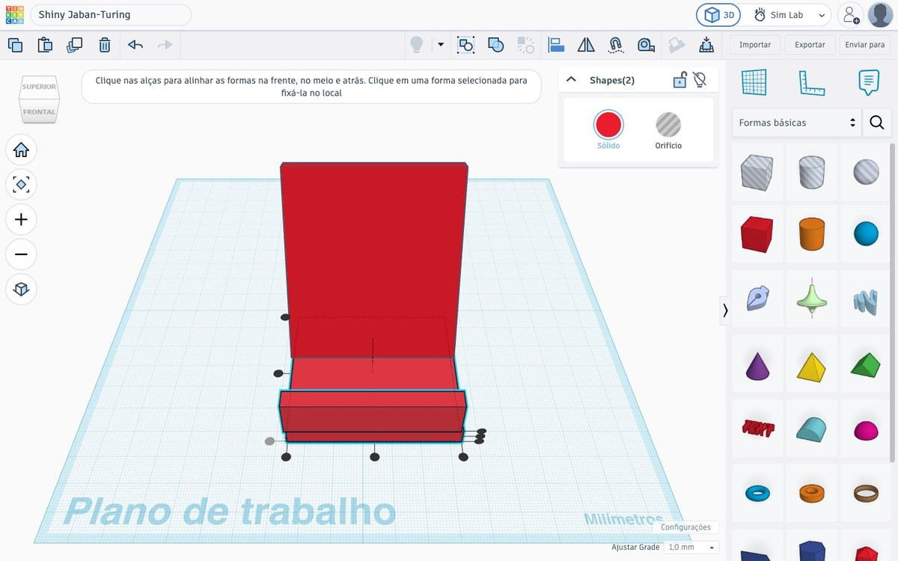
O clipe repete sozinho. Repare onde o cursor vai antes de clicar.
Foto da tela.
Na coluna da esquerda, clique na bolinha de baixo, a que alinha na frente.
O batente fica rente à frente da base. Aperte Esc para fechar o Alinhar.
- O batente foi para o meio
- Você clicou na bolinha do meio. A que alinha na frente é a de baixo.
Esc e Ctrl + A: tudo selecionado
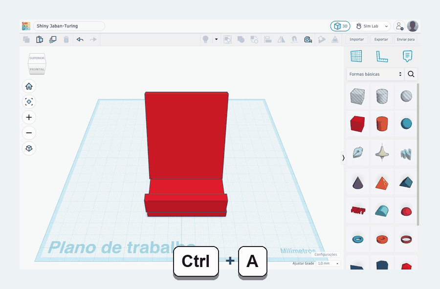
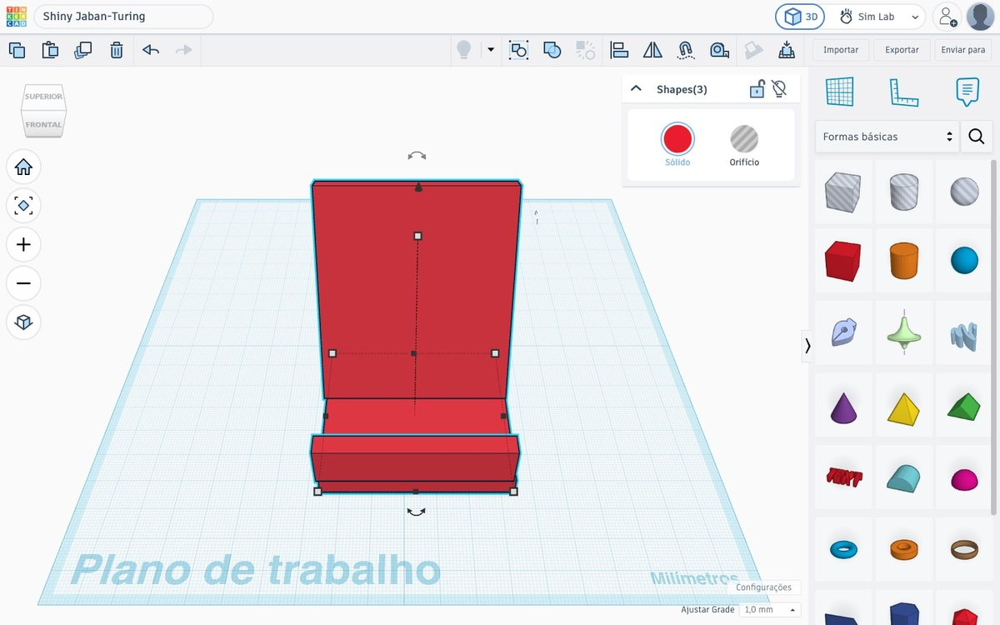
O clipe repete sozinho. Repare onde o cursor vai antes de clicar.
Foto da tela.
Aperte Esc para fechar o Alinhar. Clique num lugar vazio do plano e aperte Ctrl + A: as três peças ficam selecionadas, Shapes(3).
- O painel diz outro número
- Clique num lugar vazio e aperte Ctrl + A de novo.
Agrupe: Grupo de união
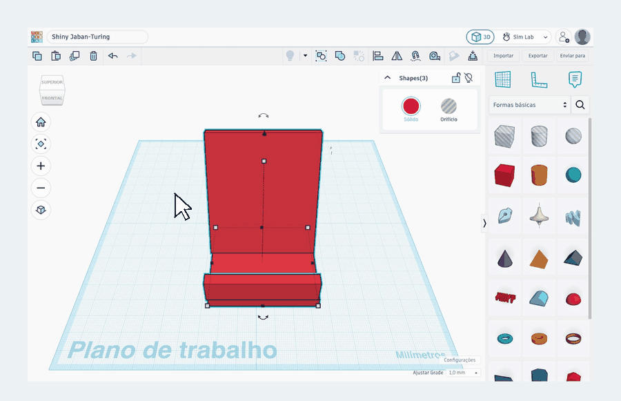
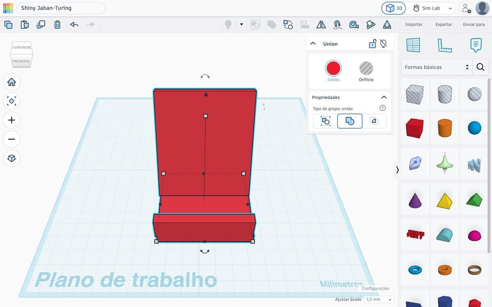
O clipe repete sozinho. Repare onde o cursor vai antes de clicar.
Foto da tela.
Na barra de cima há três botõezinhos de juntar peças, à direita do meio. Clique no do meio, o Grupo de união.
As três peças viram uma só: o painel diz Union.
- O painel não mudou
- Clique no botão do meio dos três, o Grupo de união.
Gire a câmera: veja de lado
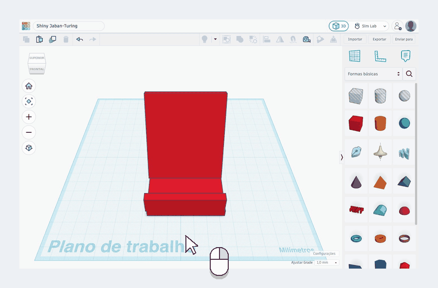
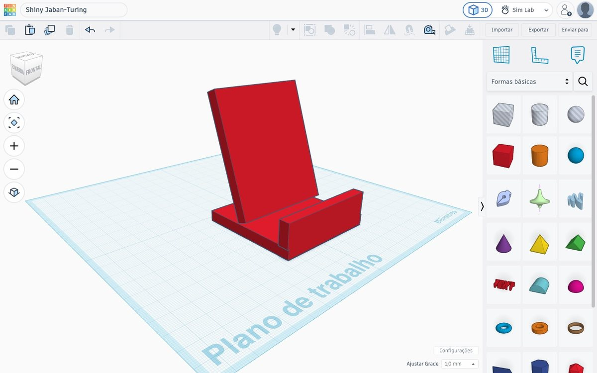
O clipe repete sozinho. Repare onde o cursor vai antes de clicar.
Foto da tela.
Clique num lugar vazio. Segure o botão direito do mouse em cima do plano de trabalho e arraste um pouco para a direita e para cima.
A câmera gira e você vê o porta-celular de lado: a base, o encosto inclinado para trás e o batente na frente. É onde o celular se apoia.
- A peça saiu do lugar
- Você usou o botão esquerdo. Aperte Ctrl + Z e repita com o direito.
- A câmera foi longe
- Use a casinha da barra da esquerda para voltar à vista inicial.
Dê um nome ao seu projeto
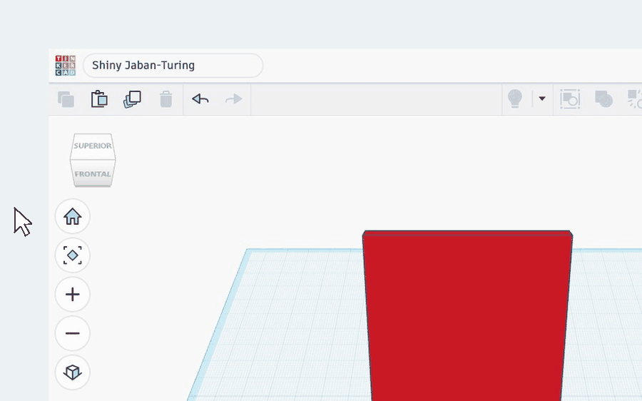
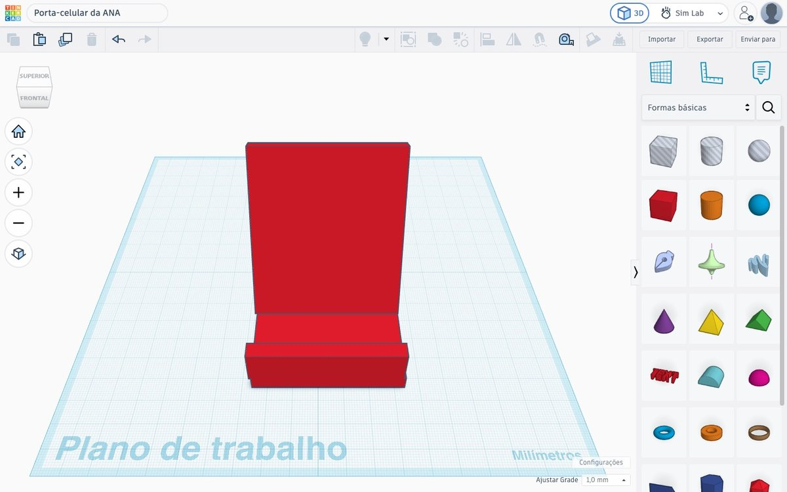
O clipe repete sozinho. Repare onde o cursor vai antes de clicar.
Foto da tela.
Clique na casinha da barra da esquerda para voltar à vista inicial. Depois clique no nome do projeto, no canto de cima à esquerda, apague, escreva Porta-celular da ANA (ou o seu nome) e aperte Enter.
O Tinkercad salva sozinho. O porta-celular está guardado na sua conta.
- O nome não mudou
- Falta o Enter.
- O campo não abriu
- Clique em cima das letras do nome.